我们知道，Android热修复的补丁通常是通过网络下发的，并且加载补丁后要重启进程才能生效。那么Instant Run的补丁是如何下发并且生效的呢？
简介
先看这张图：
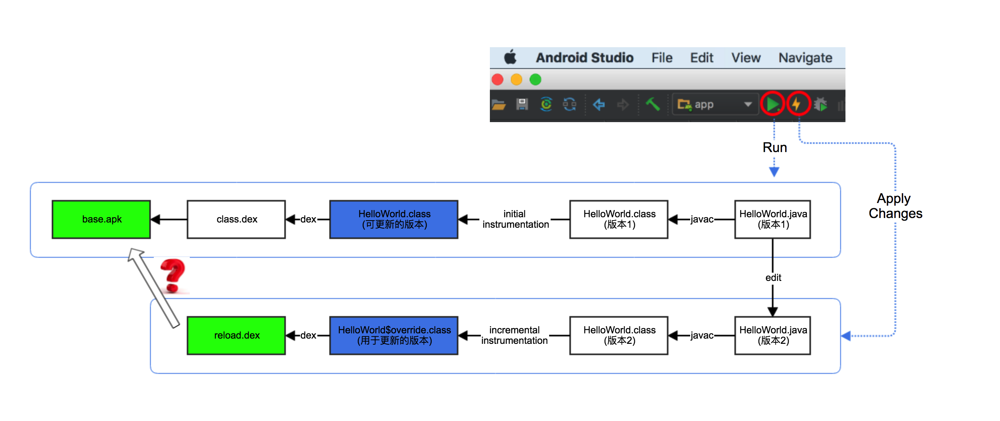
图中的base.apk是首次运行应用时生成的apk包，reload.dex是接下来Instant Run运行生成的补丁包(HelloWorld$override.class被打包成reload.dex)。
前面两篇文章分别就图中某些问题进行了讨论：
- Android Studio是如何运行app的？ - 分析了点击Run或Apply Changes后是如何运行app的
- Instant Run浅析(二) - 分析了如何使用instrumentation技术生成
HelloWorld$override.class
本篇要讨论的是补丁包如何被发送、接收以及加载。
为便于理解问题，先直接给出几个相关的知识点：
- 首先必须了解的是，Instant Run是CS架构的，它分为服务端和客户端
- Instant Run的客户端运行在Android Studio中
- Instant Run的服务端运行在手机上的app进程
也就是说，当你看见Android Studio的黄色闪电图标(Apply Change)亮起时，可以理解为Instant Run客户端成功连接/登录到Instant Run服务端，就像QQ客户端成功连接/登录QQ服务器端。这个比喻不完全准确，但二者并无本质上的不同。Instant Run客户端向Instant Run服务端发送消息，服务端处理消息并返回结果。
为了更直观地理解Instant Run，先看一个基于instant-run-client库开发的demo，代码见Github。这个demo有几个功能：
- 让app弹出toast
- 让app重启当前activity
- 手工版的hot swap
demo的玩法如下：
- 下载demo源码Github
- Android Studio中运行demo的app module，确认黄色闪电图标亮起
- 从上一步生成的
build-info.xml文件找到token (一长串数字) - 下载并运行
appclient.jar，运行方法java -jar appclient.jar
注：
build-info.xml文件的具体路径是/build/intermediates/build-info/debug/build-info.xmlappclient.jar编译自demo源码中的appclient module，编译方法./gradlew shadowJar
视频中demo发出”put patches”指令后紧接着发出”restart activity”，原来的”hello”变成了”你好”。很神奇？一起来看看背后的原理吧。
架构分析
上述demo是基于instant-run-client库实现的。instant-run-client和instant-run-server的关系大致如下图：
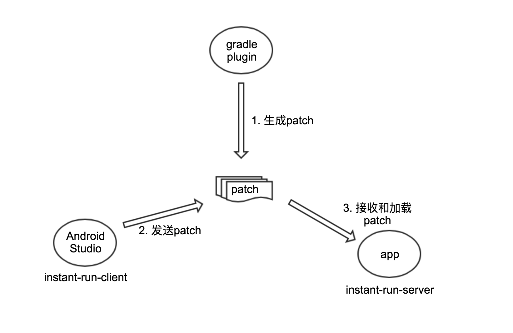
- Android Gradle Plugin生成patch
instant-run-client发送patchinstant-run-server接收并加载patch
Instant Run的源码在ASOP的platform/tools/base/目录。base项目是ASOP中一个独立的git工程。注意，base项目无法独立编译。本文基于该项目studio-master-dev分支进行分支，最后一次提交是ec8e2b78ea42ac57d6e63bf88a3e09e1713bcc08。
代码结构很清晰，它分成以下几个模块：
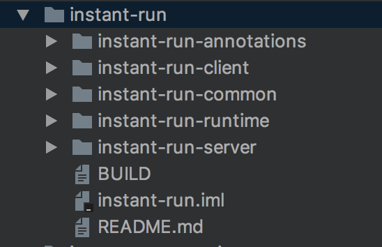
Instant Run各模块及主要类总结如下：
| 模块 | 类名 | 功能 |
|---|---|---|
| common | ProtocolConstants | instant run协议 |
| common | ApplicationPatch | 对patch的路径及数据的封装 |
| runtime | IncrementalChange | 关键的接口，代表代码变更 |
| runtime | PatchesLoader | 关键接口，用于加载patch，具体见AbstractPatchesLoaderImpl |
| server | Server | 服务端的核心 |
| client | UpdateMode | app加载patch后的启动模式 |
| client | InstantRunBuildInfo | 对应于build-info.xml文件 |
| client | InstantRunClient | 客户端的核心 |
注意这里的两个重点：
- Instant Run服务端被打包到APK
- Instant Run客户端被集成到Android Studio
如果你不太了解build-info.xml，可以参考这里：
- (译)Instant Run
- Android Studio是如何运行app的？ - 分析了点击Run或Apply Changes后是如何运行app的
另外，server模块的InstantRunContentProvider很有意思，有必要提一下。
1 | public final class InstantRunContentProvider extends ContentProvider { |
反编译base.apk你会发现构建系统偷偷帮你添加了InstantRunContentProvider，这么做的原因是利用ContentProvider.onCreate()早于Application.onCreate()运行的特点来简化Instant Run的实现。2016年Google推出Instant Run，在早期版本中为了能将Instant Run应用于Application，会向app中注入BootstrapApplication，这个BootstrapApplication代理到app原来的Application。BootstrapApplication方案带来不必要的复杂性，后期版本中采用InstantRunContentProvider方案。2016年关于Instant Run的技术博客中，比如这篇，经常可以看到BootstrapApplication，请注意避免踩坑。
如果你不相信provider比application先运行，可以看看日志。
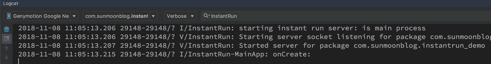
源码分析
Instant Run客户端通过ddmlib库跟服务端通信。使用ddmlib时在build.gradle添加如下依赖：
1 | // https://mvnrepository.com/artifact/com.android.tools.ddms/ddmlib |
Instant Run客户端
instant-run-client模块并不复杂，这是它的类图。
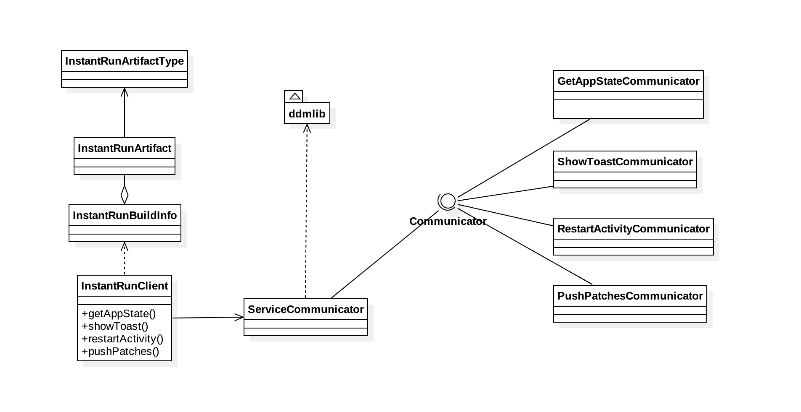
instant-run-client最终会调用ServiceCommunicator.talkToService(IDevice device, Communicator<T> communicator)跟Android设备通信的。
device参数通过ddmlib库获取- 使用
ddmlib获取device列表的方法可参考这里 - 通信前
device通过本地的TCP 46622端口跟远程的Unix Domain Socket建立端口转发关系
- 使用
communicator参数封装了通信逻辑，ProtocolConstants中的每个命令字都有对应的Communicator实现
InstantRunClient有如下几个重要方法：
getAppState()showToast()restartActivity()pushPatches()
鉴于这些方法非常容易理解，这里就不做无聊的分析。有兴趣可以参考前面提到的demo。
Instant Run服务端
Server是Instant Run服务端的核心，它是一个典型的服务端程序。
不过跟常见的服务端程序有所不同的是，Server使用LocalServerSocket以及LocalSocket编程，而不是Java中常用的ServerSocket以及Socket编程。
查文档知道LocalServerSocket和LocalSocket是Android平台特有的类，它们与Socket的区别可参考这里
Server的核心代码如下：
1 | private class SocketServerThread extends Thread { |
这种代码结构是不是很眼熟？总结一下它的套路：
- 启动
SocketServerThread线程 SocketServerThread线程进入无限循环accept()监听客户端连接- 启动
SocketServerReplyThread线程处理客户端连接 - 跳转到2，继续循环
SocketServerReplyThread.handle()方法负责处理客户端消息，我们感兴趣的消息指令见下表。
| 命令字 | 功能 |
|---|---|
MESSAGE_PING |
检查服务端在线状态。 服务端在线时Android Studio的黄色闪电图标亮起 |
MESSAGE_SHOW_TOAST |
通知服务端弹出Toast提示 |
MESSAGE_RESTART_ACTIVITY |
通知服务端重启当前activity 。某些修改必须重起activity才能生效 |
MESSAGE_PATCHES |
向服务端发送patch |
MESSAGE_PATCHES的处理流程如下：

再来看对应的代码：
1 | private void handle(DataInputStream input, DataOutputStream output) throws IOException { |
注意第3处代码，它在更新资源或代码。更新代码时会调用handleHotSwapPatch()，它是加载patch的关键所在，代码如下(为了保持代码清晰这里仅保留主要部分)：
1 | private int handleHotSwapPatch(int updateMode, @NonNull ApplicationPatch patch) { |
- 第5处代码：从dex文件中加载
AppPatchesLoaderImpl - 第6处代码：创建loader实例并加载patch
- 第7，8，9处代码：loader加载patch不成功或者发生异常时，updateMode直接升级为
COLD_SWAP
关于这段代码还应注意的是classloader之间是如何建立关系的：
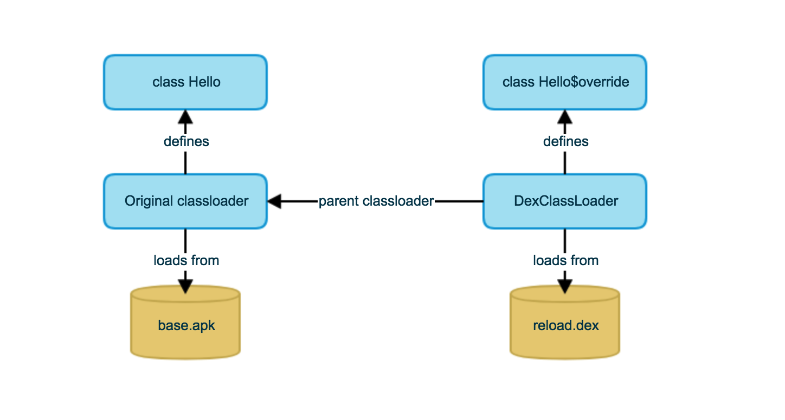
上面的代码中使用AppPatchesLoaderImpl加载其他类。AppPatchesLoaderImpl由Android Gradle Plugin生成，我们看不到源码。不过可以在build/intermediates/transforms/instantRun/debug目录找对应的类文件，其反编译结果如下。
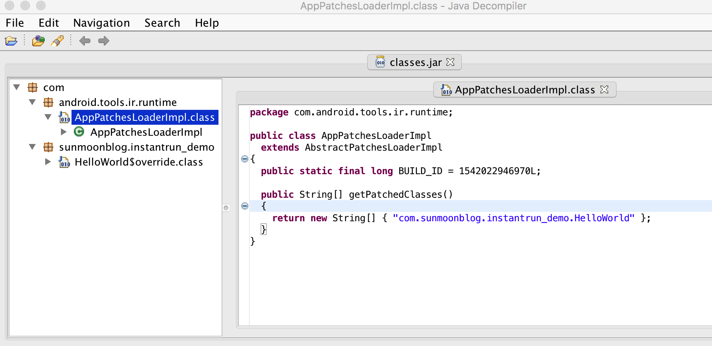
getPatchedClasses()方法返回的String[]记录了本次修改的类。就本次而言，仅修改了HelloWorld。
AbstractPatchesLoaderImpl是AppPatchesLoaderImpl的父类。
1 | public abstract class AbstractPatchesLoaderImpl implements PatchesLoader { |
AbstractPatchesLoaderImpl.load()用于加载patch。以HelloWorld为例，load()方法的几个关键操作如下：
- 加载
HelloWorld$override类 - 创建
HelloWorld$override实例 - 找到
HelloWorld类的$change字段 - 将
HelloWorld$override实例设置到$change字段。参考Instant Run浅析(二)
补充知识
这里记录了一些有用的知识点，分析Instant Run源码时可能会用到。
updateMode
InstantRunClient.pushPatches()用于发送patch，这个方法返回UpdateMode。通过pushPatches()的代码容易明白updateMode是由Android gradle plugin，instant-run-server以及Android Studio三方共同确定的 ，instant-run-client 充当协调者
用图画出来大概是这样：
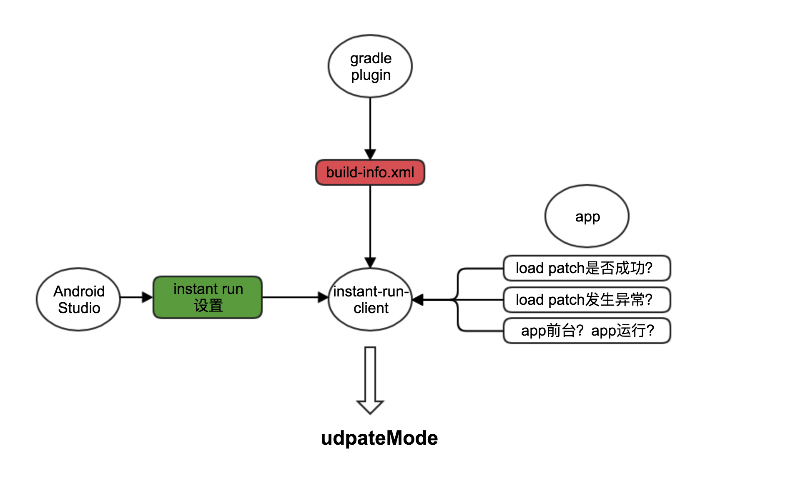
总结一下就是以下三个影响因素，其中最重要的是build-info.xml：
build-info.xml- Android gradle plugin生成的build-info.xml(文件路径/build/intermediates/build-info/debug/build-info.xml)- app状态信息 - 运行状态、前台状态以及
AbstractPatchesLoaderImpl.load()返回值 - Android Studio instant run设置 - 见下图
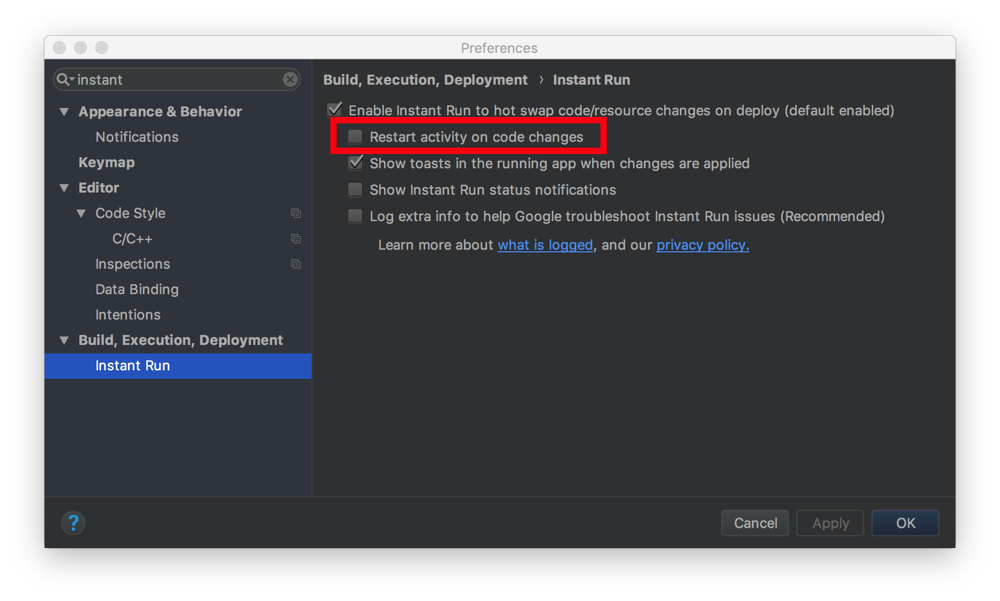
instant-run-client作为协调者综合考量这三个因素，得到最终的updateMode，而最终的updateMode决定app是否会被重启。
build-info.xml
Android Studio开启instant run之后，每次instant run的编译信息记录在/build/intermediates/build-info/debug/build-info.xml文件中。文件内容类似这样：
1 |
|
直接看xml文件会有些无聊，结合代码容易理解一些。
InstantRunBuildInfo- instant run编译信息，对应于build-info.xml的<instant-run>节点InstantRunArtifact- instant run编译结果，对应于build-info.xml的<artifact>节点。编译结果本质上文件InstantRunArtifactType- instant run编译结果的类型，对应于build-info.xml中<artifact>节点的type属性
InstantRunArtifactType分为以下几种类型：
MAIN- 包含资源文件的主APKSPLIT_MAIN- 包含资源文件的主APK，适用于分包(多个APK文件)的场景SPLIT- 分包APKRELOAD_DEX- 代码更新包RESOURCES- 资源更新包
instant run会进行根据情况进行不同类型的构建，每次构建会生成一个<build>节点保存到build-info.xml中：
FULL- 全量构建，一般发生在首次运行instant run时。生成一个类型为SPLIT_MAIN的apk文件以及一个或多个类型为SPLIT的apk文件HOT_WARM- 一般发生在进行了兼容的改动之后。生成类型为RELOAD_DEX的dex文件，或者类型为RESOURCES的ap_文件COLD- 一般发生在进行了不兼容的改动后。生成类型为SPLIT的文件
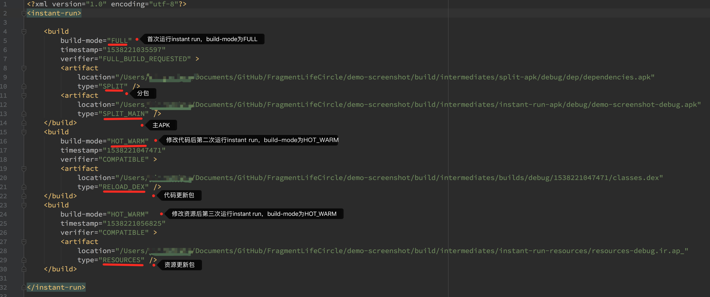
build-info.xml中还会记录两个关键信息：
duration- 最后一次构建时各任务的耗时信息ir-eligibility- 违反哪条规则导致COLD构建。比如修改方法签名会导致COLD构建，这时的ir-eligibility是METHOD_DELETED
当你发生instant run运行慢或者行为不符合预期，build-info.xml或许能提供一些线索。
1 | <instant-run build-mode="COLD" ir-eligibility="METHOD_DELETED" verifier="COLD_SWAP_REQUESTED"> |
使用如下命令在platform/tools/base/工程中搜索”build-info”字符串：
1 | find . -name "*.java" | xargs grep "build-info" |
可以找到几个跟build-info.xml相关的类：
- BuildInfoWriterTask
- ApplicationTaskManager
- InstantRunBuildContext
日志
这里介绍几个跟Instant Run相关的重要日志。
Instant Run日志
小技巧：instant run打印了非常详尽的日志。打开日志后运行代码，对照着日志和运行结果分析代码，看”动”的代码比看”静止”的代码更简单。adb shell中执行setprop log.tag.InstantRun VERBSOE命令可以打开instant run日志。
instant run日志类似这样：
1 | 09-27 18:16:25.766 7749-7867 V/InstantRun: Received Ping message from the IDE; returned active = true |
Android Studio日志
Android Studio日志 - 在Android Studio - Help - Show Log in Finder中可以找到这些日志。强烈推荐看看官方介绍
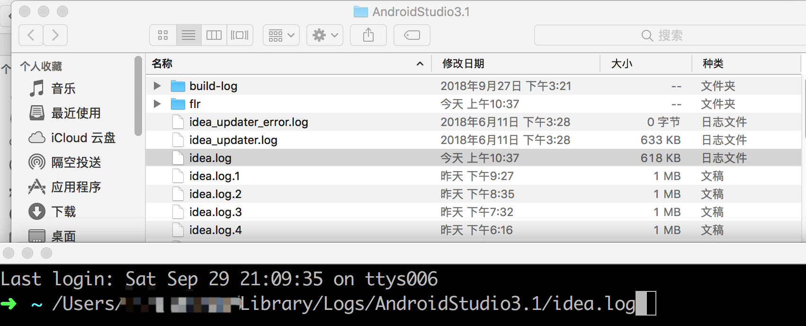
其中idea.log是Android Studio以及SDK运行时生成的日志，在这里可以找到build-info.xml中build-mode的根源。
其他日志
跟idea.log同级别有一个flr目录，其中包括几个重要日志。

build.log- This log captures build information from Gradle。这个日志跟Android Studio build工具栏中看到的日志是一样的，跟gradle带–info参数运行时看到的日志也是一样的。build-info.xml- 这个日志我们之前分析过，官方对它的介绍是这样的： This is an intermediate file that Android Studio uses to coordinate Instant Run features with the Android plugin for Gradleprofile.log- This log provides a profile of how quickly Gradle progressed through each build task.
注：你可能觉得这么既然Android Studio build工具栏(第1种方式)或gradle --info(第2种方式)者能看到日志，何必要那么麻烦去Android Studio的日志目录中找build.log文件。问题在于日志往往较多，第1种方式无法显示完整日志，不便于排查问题。而第2种方式压根不能进行instant run
1 | 2018-09-30 10:37:10,325 [e-1024-b01] INFO - #InstantRun - Invoking hotswap launch |
如果找不到上述日志，可以检查一下日志开关是否开启：
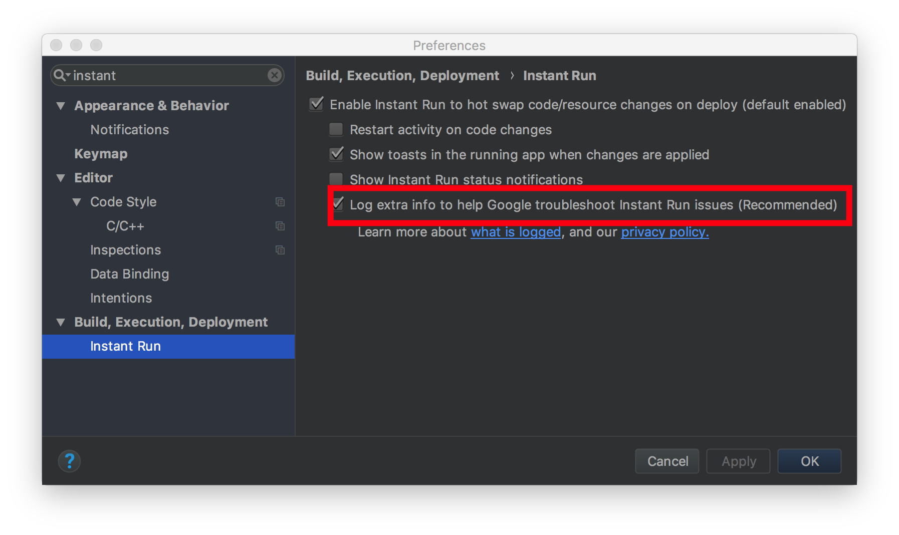
总结
简单总结一下本文内容：
- Instant Run是CS架构
- Android Studio作为客户端，app作为服务端
- 补丁包是由Android Studio发送到app
- app加载hotswap类型补丁时不重启即可生效
PatchesLoader从补丁包加载HelloWorld$override类并创建其实例HelloWorld$override实例设置到HelloWorld.$change字段
- demo演示了
instant-run-client库的用法，demo见Github